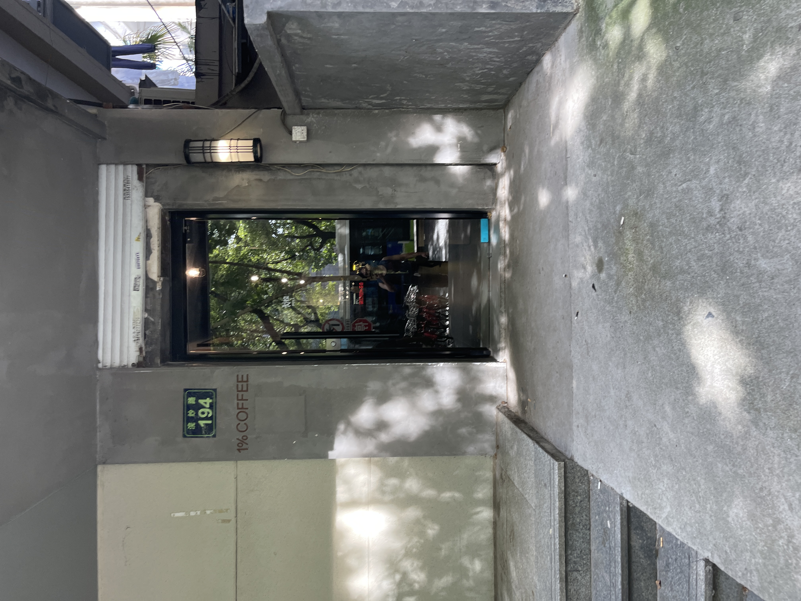
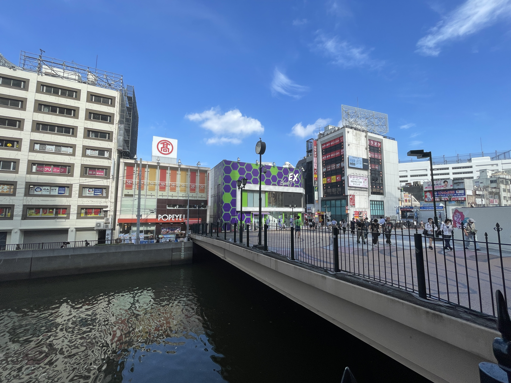
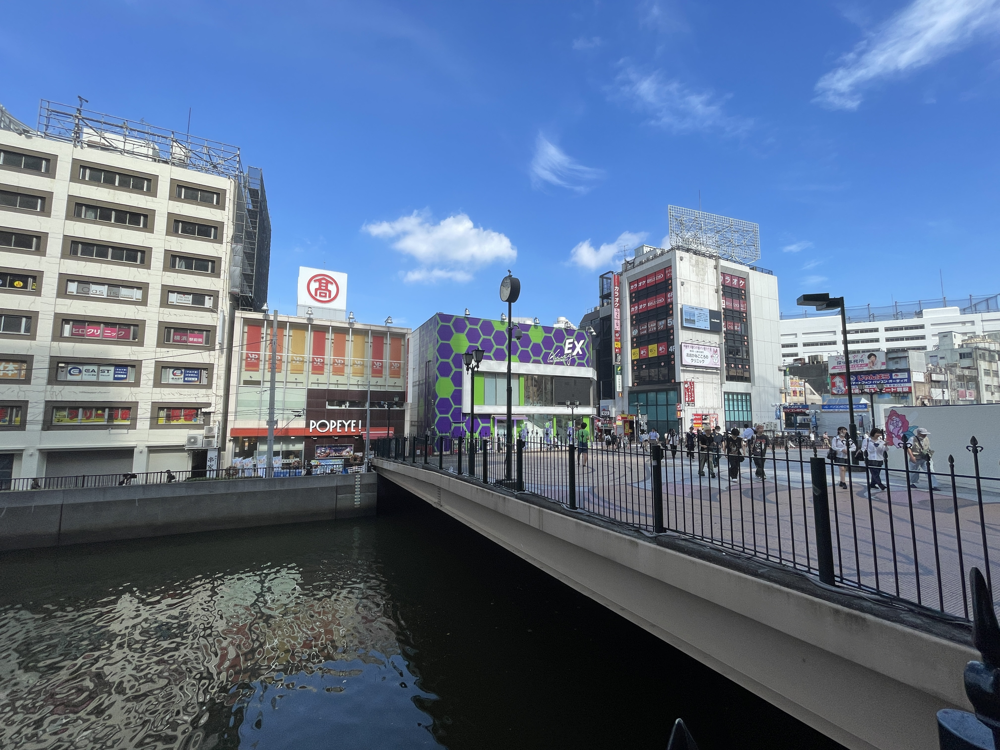
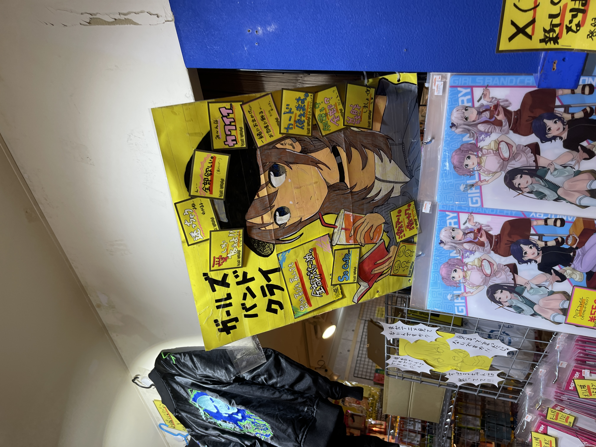
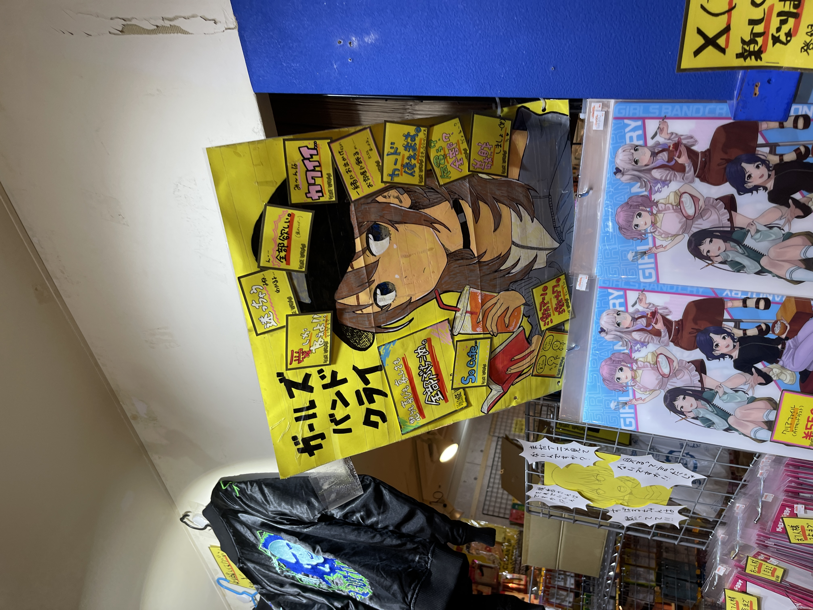

欢迎来到我的旅行摄影记录页面！在这里，我会分享我在各地旅行时拍摄的照片和旅行感受。
🏯 京都古韵
京都寺庙与街景
拍摄时间：2025年春季
地点：日本京都
感受：京都的古寺庙和传统街道充满了历史韵味，每一个角落都诉说着千年的故事。漫步在石板路上，感受着日式建筑的精致与优雅。
推荐指数：⭐⭐⭐⭐⭐


🏙️ 大阪印象
大阪城市风光
拍摄时间：2025年春季
地点：日本大阪
感受：大阪是一座充满活力的现代化城市，高楼大厦与传统文化完美融合。在这里可以感受到关西地区独特的文化氛围和热情好客的民风。
推荐指数：⭐⭐⭐⭐⭐
🌸 杭州西湖
西湖四季美景
拍摄时间：2025年春季
地点：浙江杭州
感受："上有天堂，下有苏杭"，杭州西湖的美景名不虚传。湖光山色，亭台楼阁，每一处风景都如诗如画。漫步在苏堤白堤上，感受着江南水乡的温婉与秀美。
推荐指数：⭐⭐⭐⭐⭐

🌊 横滨港湾
横滨港湾风光
拍摄时间：2025年春季
地点：日本横滨
感受：横滨作为日本重要的港口城市，拥有独特的海港风情。红砖仓库、摩天轮、港湾大桥构成了美丽的城市天际线，现代化建筑与历史遗迹完美融合。
推荐指数：⭐⭐⭐⭐⭐

 

🗼 东京都市
东京现代都市风貌
拍摄时间：2025年春季
地点：日本东京
感受：东京作为世界级大都市，展现了现代日本的繁华与活力。从传统的浅草寺到现代的东京塔，从繁忙的涩谷十字路口到宁静的皇居，每一处都有着独特的魅力。
推荐指数：⭐⭐⭐⭐⭐


 


🏭 川崎工业
川崎工业区夜景
拍摄时间：2025年春季
地点：日本川崎
感受：川崎的工业区在夜晚展现出独特的美感，巨大的工厂设施在灯光的映照下如同科幻电影中的场景。这里是日本工业文明的象征，也是摄影爱好者的天堂。
推荐指数：⭐⭐⭐⭐


📝 旅行摄影小贴士
- 黄金时间：日出日落时分是拍摄的最佳时机，光线柔和温暖
- 构图技巧：运用三分法则，让画面更有层次感
- 设备准备：带上三脚架，特别是拍摄夜景和日出时
- 安全第一：在危险地带拍摄时一定要注意安全
- 尊重当地：拍摄时要尊重当地文化和习俗
🗺️ 未来旅行计划
接下来我计划去以下地方拍摄：
- 新疆喀纳斯湖 - 拍摄秋季的金黄胡杨林
- 西藏拉萨 - 记录高原上的蓝天白云
- 内蒙古呼伦贝尔 - 捕捉草原的辽阔与美丽
- 四川稻城亚丁 - 探索最后的香格里拉
旅行不仅仅是看风景，更是一种心灵的洗礼。每一次按下快门，都是在记录一个瞬间，一份感动。 希望通过这些照片和文字，能与大家分享旅途中的美好时光。